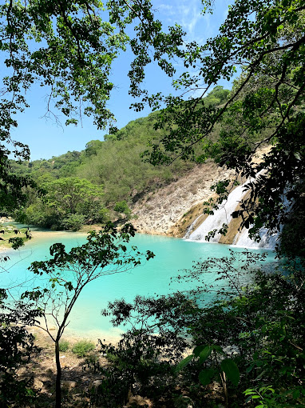
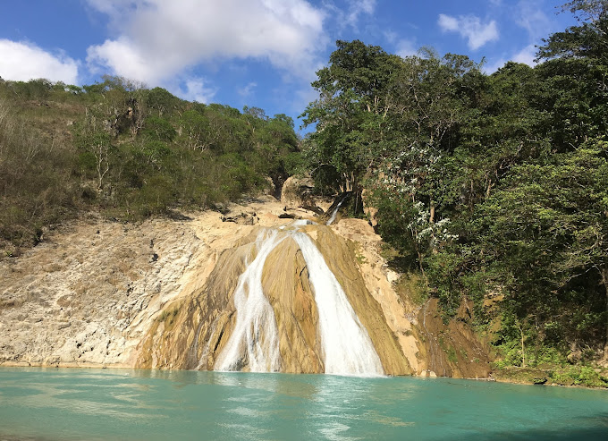

Ministère du tourisme
Ministère du tourismeBassin Zim
- 
- 
Le bassin Zim
est un lieu touristique qui se trouve à Hinche à la troisième section.
C'est une cascade d'eau qui sert de lieu de pèlerinage pour beaucoup d'adeptes du vaudou.
Bassin zim se situe à 8 km de la ville de Hinche qui est le chef lieu du département du centre.
Il renferme des grottes et de chutes d'eau.
Bassin Zim est un cadre enchanteur, joyau, oasis de tranquillité, Sanctuaire des premiers habitants de l'île d'Ayiti à savoir les taïnos.
C'était un espace mystique où tout était sacré.
Outre son cadre verdoyant et reposant, le Bassin Zim attire aussi les amateurs de légendes et d’ésotérisme.
Ces derniers trouvent au site un côté mystique en raison notamment de certaines histoires et légendes qui l’entourent.
Ainsi, le site offrirait des bienfaits aux âmes pures.
Il regorgerait de trésors cachés par les Indiens.
De nombreux guides vivant au voisinage du site, dont Jean-Claude Alcide et Wesner Joseph, témoignent que « la zone est hautement mystique
et que beaucoup de gens auraient trouvé fortune ou guérison après avoir été en contact avec les esprits du Bassin ».
Tous ces mythes nourrissent l’imaginaire et augmentent l’intérêt porté à Bassin Zim. Cependant, le sociologue haïtien Stephen Jean Hilaire fait revenir les rêveurs à la réalité.
«Devant tout cela, les touristes seront stupéfaits de constater que cette eau à haut débit n’est pas captée pour fournir de l’électricité à Hinche et à la communauté de Bassin Zim.
Ils s’étonneront aussi que les esprits et l’Etat, gardiens des trésors et du site, n’aient pas daigné permettre la création d’écoles gratuites pour les fils des paysans
et utiliser cette eau pour arroser les plantations afin de fertiliser les parcelles dédiées à l’agriculture», semble-t-il regretter.